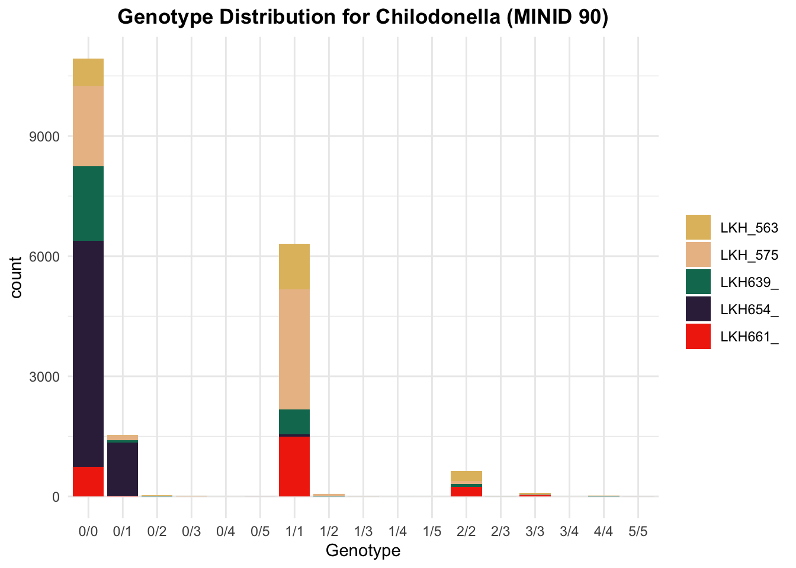

First, we’ll load the needed libraries.
library(tidyverse)
library(vcfR)
library(scales)
library(reshape2)
library(wesanderson)Then, we’ll read in the input data. For the heterozygosity analysis here, we’ll just need the vcfR object.
#reading in vcfR object for 5 halteria individuals (MINID90)
halteria_90 <- read.vcfR("./Data/halteria/all_filtered_halt_90.vcf")
#defining a color to use for halteria plots for clarity
halt_color = "#964b69"
#reading in vcfR object for 5 chilodonella individuals (MINID90)
chilo_90 <- read.vcfR("./Data/chilo/all_filtered_chilo_90.vcf")
#defining a color to use for chilodonella plots for clarity
chilo_color = "#1ea8d6"Here are the functions needed to do the analysis.
#get filtered genetic differentiation data frame
#takes the mandatory arguments a vcfR and population factor, and optional argument AB_filter so you can filter out low AB sites (more likely to be spurious)
get_filtered_diff <- function(vcfR, pops, AB_filter = .2) {
#extract tidy data frame from vcfR object
vcf_tidy <- vcfR2tidy(vcfR, single_frame = TRUE, info_types = TRUE, format_types = TRUE)[["dat"]]
#get vector containing all polymorphisms with allele balance > .2
filter_vector <- vcf_tidy %>%
filter(AB > AB_filter | AB == 0) %>%
select(CHROM, POS, AB) %>%
mutate(ID = paste(CHROM, POS, sep="_")) %>%
pull(ID)
#get the genetic diff object containing only the polymorphisms with allele balance > .2
genetic_diff(vcfR, pops = pops,
method = 'nei') %>%
mutate(ID = paste(CHROM, POS, sep = "_")) %>%
filter(ID %in% filter_vector)
}
#plot mean heterozygosity for each LKH sample
#takes mandatory argument of the genetic_diff data frame (generated by the previous function), optional argument species_name (what you want included in the title), and optional argument fill
plot_mean_heterozygosity <- function(genetic_diff, species_name = "", fill = "#3f15a1") {
het_columns <- genetic_diff %>%
select(starts_with("Hs"))
#takes average of heterozygosity values for each individual
genetic_diff_summary <- round(colMeans(het_columns, na.rm = TRUE), digits = 4)
genetic_diff_summary <- tibble("names" = colnames(het_columns), "values" = genetic_diff_summary)
genetic_diff_summary %>%
ggplot() + geom_bar(aes(x = names, y = values),
stat = "identity",
fill = fill) +
geom_label(aes(label = values,
x = names,
y = values)) +
labs(title = paste("Mean Heterozygosities for", species_name),
y = "Mean Heterozygosity",
x = "Sample") +
theme_minimal() +
theme(plot.title = element_text(face = "bold", hjust = .5))
}
#plot GST and G'ST distribution
#takes mandatory argument genetic_diff data frame, optional argument species_name, and optional argument fill
plot_gst <- function(genetic_diff,
species_name = "",
fill = "#3f15a1") {
vars <- c("Gst", "Gprimest")
mdf <- melt(genetic_diff[vars], varnames = c('Index', 'Sample'),
value.name = 'Depth',
na.rm = TRUE)
mdf %>%
ggplot(aes(x = variable, y = Depth)) +
geom_violin(fill = fill) +
theme_minimal() +
labs(title = paste("Gst and G'st Distribution\n", species_name),
x = NULL, y = NULL) +
theme(plot.title = element_text(face = "bold", hjust = .5))
}
#plot heterozygosity distribution for each individual
#takes arguments genetic_diff data frame, species_name, and optional argument fill
plot_het <- function(genetic_diff,
species_name = "",
fill = "#3f15a1") {
vars <- genetic_diff %>% select(starts_with("Hs")) %>% colnames()
mdf <- melt(genetic_diff[vars], varnames = c('Index', 'Sample'),
value.name = 'Depth',
na.rm = TRUE)
mdf %>%
ggplot(aes(x = variable, y = Depth)) +
geom_violin(fill = fill) +
theme_minimal() +
labs(title = paste("Heterozygosity Distribution\n", species_name),
x = NULL, y = NULL) +
theme(plot.title = element_text(face = "bold", hjust = .5))
}To get the genetic differentiation information, we supply the population information as a factor and the vcfR object to the get_filtered_diff function. This looks at only sites with an allele balance greater than .2, or whatever minimum allele balance value you supply (but still including homozygous sites). If you want the genetic differentiation information without this filter, use the argument AB_filter = 0.
#store the population information as a factor - make sure they are in the same order as they appear in the vcf file
pop_halt <- as.factor(c("LKH576", "LKH564", "LKH555", "LKH545", "LKH552"))
pop_chilo <- as.factor(c("LKH654", "LKH639", "LKH661", "LKH563", "LKH575"))
#call filter function to get filtered genetic diff data frame
halt_Diff_filtered <- get_filtered_diff(halteria_90, pops = pop_halt)
chilo_Diff_filtered <- get_filtered_diff(chilo_90, pops = pop_chilo)
#call genetic_diff function to get unfiltered genetic diff data frame
halt_Diff_unfiltered <- get_filtered_diff(halteria_90, pops = pop_halt, AB_filter = 0)
chilo_Diff_unfiltered <- get_filtered_diff(chilo_90, pops = pop_chilo, AB_filter = 0)Now that we have the genetic differentiation information, we can begin visualizing the data.
Here, we look at the mean heterozygosities for each LKH sample. For comparing across organisms, it will be crucial to keep the axis the same.
#include any information you want in the title of the plot under the species_name argument (for example, parameters like depth or minimimum identity)
plot_mean_heterozygosity(halt_Diff_filtered, species_name = "Halteria (MINID 90, AB > 0.2) ", fill = halt_color) + ylim(0,.25)plot_mean_heterozygosity(halt_Diff_unfiltered, species_name = "Halteria (MINID 90) ", fill = halt_color) + ylim(0,.25)plot_mean_heterozygosity(chilo_Diff_filtered, species_name = "Chilodonella (MINID90, AB > 0.2)", fill = chilo_color) + ylim(0, .25)plot_mean_heterozygosity(chilo_Diff_unfiltered, species_name = "Chilodonella (MINID 90) ", fill = chilo_color) + ylim(0,.25)Then, we can make violin plots to visualize the distributions of GST, G’ST, and heterozygosity.
#call plot_gst function to plot GST and G'ST distribution (violin plot)
plot_gst(halt_Diff_unfiltered, species_name = "Halteria (MINID 90)", fill = halt_color) + ylim(0, 1)plot_gst(chilo_Diff_unfiltered, species_name = "Chilodonella (MINID 90)", fill = chilo_color) + ylim(0, 1)#call plot_het function to plot the heterozygosity distribution (violin plot)
plot_het(halt_Diff_unfiltered, species_name = "Halteria (MINID 90)", fill = halt_color)plot_het(chilo_Diff_unfiltered, species_name = "Chilodonella (MINID 90)", fill = chilo_color)As we analyze heterozygosity, it can be helpful to look at the genotypes called for the different individuals.
#using the extract.gt function to get the genotype information
gt_halt <- extract.gt(halteria_90, element = "GT") %>%
#convert to tibble format so we can use pivot_longer() function
as_tibble() %>%
#convert the data to tidy format
pivot_longer(cols = starts_with("LKH"), names_to = "Sample", values_to = "GT")
gt_chilo <- extract.gt(chilo_90, element = "GT") %>%
#convert to tibble format so we can use pivot_longer() function
as_tibble() %>%
#convert the data to tidy format
pivot_longer(cols = starts_with("LKH"), names_to = "Sample", values_to = "GT")Now that we have a tidy data frame (tibble), we can plot it. Here, we use facet_wrap to plot small multiples to split the plots up by sample.
#one way to visualize the data - faceting (creating small multiples)
gt_halt %>%
filter(is.na(GT) == FALSE) %>%
ggplot() +
geom_histogram(aes(x = GT,
fill = substr(Sample, 1, 7)),
stat = "count") + theme_minimal() +
labs(x = "Genotype",
title = "Genotype Distribution for Halteria (MINID 90)") + theme(plot.title = element_text(face = "bold", hjust = .5), legend.title = element_blank()) +
#split the plot into groups based on Sample (1 plot for each sample)
#substr() just makes the titles more neat by only plotting the first 7 characters of the sample name
facet_wrap(~substr(Sample, 1, 7), nrow = n_distinct(gt_halt %>% pull(Sample))) +
scale_fill_manual(values = wes_palette("Rushmore1"))gt_chilo %>%
filter(is.na(GT) == FALSE) %>%
ggplot() +
geom_histogram(aes(x = GT,
fill = substr(Sample, 1, 7)),
stat = "count") + theme_minimal() +
labs(x = "Genotype",
title = "Genotype Distribution for Chilodonella (MINID 90)") + theme(plot.title = element_text(face = "bold", hjust = .5), legend.title = element_blank()) +
#split the plot into groups based on Sample (1 plot for each sample)
#substr() just makes the titles more neat by only plotting the first 7 characters of the sample name
facet_wrap(~substr(Sample, 1, 7), nrow = n_distinct(gt_halt %>% pull(Sample))) +
scale_fill_manual(values = wes_palette("Rushmore1"))#another way to visualize the data - a stacked bar chart
gt_chilo %>%
#removing NA values
filter(is.na(GT) == FALSE) %>%
#create ggplot object
ggplot() +
#plot histogram based on count of each type of genotype call
#fill is mapped to sample
geom_histogram(aes(x = GT,
fill = substr(Sample, 1, 7)),
stat = "count") + theme_minimal() +
#add title and x axis label
labs(x = "Genotype",
title = "Genotype Distribution for Chilodonella (MINID 90)") + theme(plot.title = element_text(face = "bold", hjust = .5), legend.title = element_blank()) + scale_fill_manual(values = wes_palette("Rushmore1"))
gt_halt %>%
#removing NA values
filter(is.na(GT) == FALSE) %>%
#create ggplot object
ggplot() +
#plot histogram based on count of each type of genotype call
#fill is mapped to sample
geom_histogram(aes(x = GT,
fill = substr(Sample, 1, 7)),
stat = "count") + theme_minimal() +
#add title and x axis label
labs(x = "Genotype",
title = "Genotype Distribution for Halteria (MINID 90)") + theme(plot.title = element_text(face = "bold", hjust = .5), legend.title = element_blank()) + scale_fill_manual(values = wes_palette("Rushmore1"))